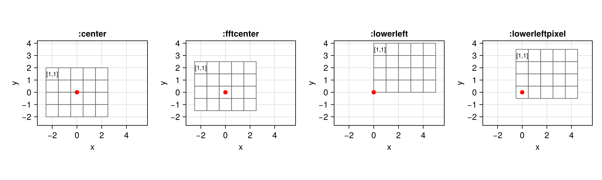
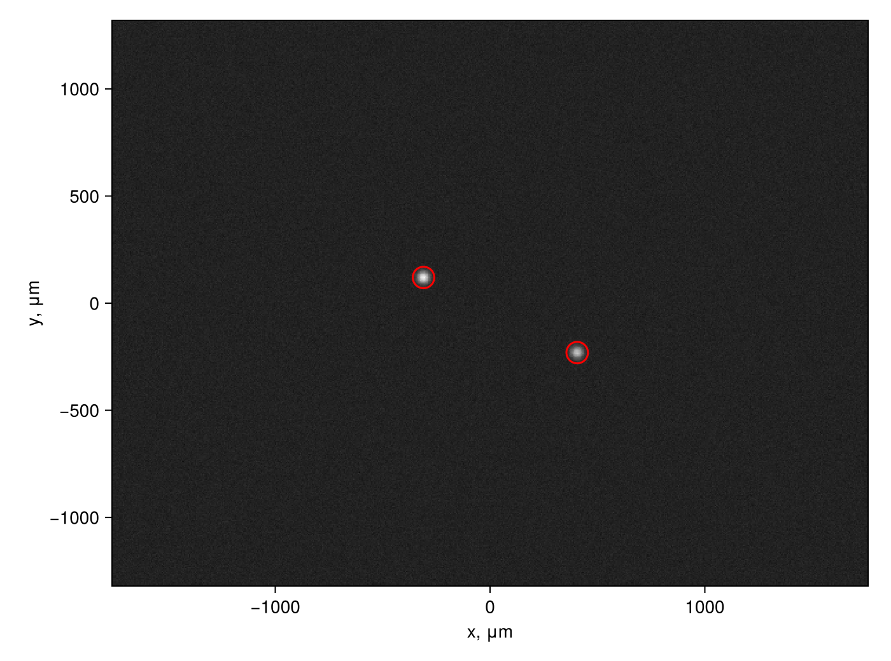

using SampledDomains
using CairoMakie
using Random
CairoMakie.activate!(; type="png")Origins and units
Four origins
imagedomain puts the origin (0, 0) at one of four places, chosen by the keyword origin. Here an image of 4 rows and 5 columns with pixels of size 1; each pixel is drawn as a square around its point, and the origin as a red dot:
origins = [:center, :fftcenter, :lowerleft, :lowerleftpixel]
fig = Figure(; size=(1000, 300))
for (k, o) in enumerate(origins)
d = imagedomain((4, 5); origin=o)
ax = Axis(fig[1, k]; title=":$o", aspect=DataAspect(), xlabel="x", ylabel="y",
limits=(-3.2, 5.7, -2.7, 4.2))
for p in d
poly!(ax, Rect2f(p.x - 0.5, p.y - 0.5, 1, 1); color=:white, strokecolor=:gray40,
strokewidth=1)
end
text!(ax, d[1, 1]...; text="[1,1]", align=(:center, :center), fontsize=10)
scatter!(ax, [Point2f(0, 0)]; color=:red, markersize=10)
end
fig
:center: the geometric centre of the image; for an even number of pixels it lies between two pixels (the default).:fftcenter: the centre of the pixel(rows ÷ 2 + 1, columns ÷ 2 + 1), wherefftshiftputs the zero frequency. A pupil on such a domain goes into an FFT withifftshiftwithout a phase ramp.:lowerleft: the lower-left corner of the image; the pixels span 0…1, 1…2, …, as in Makie'simage.:lowerleftpixel: the centre of the lower-left pixel; the pixels are centred on 0, 1, …, as in Makie'sheatmap.
Any other place is given as a fractional index (j0, i0): pixel (j, i) has its centre at the index (j, i) and its corners at j ± 0.5, i ± 0.5. For example the upper-left corner:
imagedomain((4, 5); origin=(0.5, 0.5))[1, 1]2-element StaticArraysCore.SVector{2, Float64} with indices SOneTo(2):
0.5
-0.5Units
A domain has no units by default: the coordinates are pixels.
imagedomain((480, 640))480×640 CartesianDomain2D{Float64} with points (x, y):
x: -319.5:1.0:319.5
y: 239.5:-1.0:-239.5The pixel size and its unit are given when the domain is made, or declared later with setunits:
dom = imagedomain((480, 640); pixelsize=5.5, units=:um)480×640 CartesianDomain2D{Float64} with points (x, y):
x: -1757.25:5.5:1757.25
y: 1317.25:-5.5:-1317.25
units=μmunits(dom)(x = μm, y = μm)convertunits changes the numbers. Between nm, μm, mm, cm and m the factor is an exact power of ten, so the coordinates stay round:
convertunits(dom, :mm)480×640 CartesianDomain2D{Float64} with points (x, y):
x: -1.75725:0.0055:1.75725
y: 1.31725:-0.0055:-1.3172499999999998
units=mminwavelengths gives coordinates in wavelengths, x/λ, with λ in the units of the domain; the value of λ is kept, so the conversion can be undone:
w = inwavelengths(dom, 0.633)480×640 CartesianDomain2D{Float64} with points (x, y):
x: -2776.0663507109:8.688783570300158:2776.066350710901
y: 2080.963665086888:-8.688783570300158:-2080.963665086888
units=λ (λ = 633.0 nm)convertunits(w, :um) ≈ domtrueThe labels of the axes follow the units:
axislabels(dom), axislabels(w)((xlabel = "x, μm", ylabel = "y, μm"), (xlabel = "x, λ", ylabel = "y, λ"))Multiplying a domain by a number drops the units, since a number does not tell what they become: dividing by a radius gives dimensionless coordinates, multiplying a grid of spatial frequencies by λ f gives lengths.
units(dom / 100)(x = nothing, y = nothing)Features in an image
A camera image with two spots, of 20 μm width, and noise. The spots are placed at known points, and we find them back.
truth = [(x=-310.0, y=120.0), (x=405.0, y=-230.0)]
spot(p, c) = exp(-((p.x - c.x)^2 + (p.y - c.y)^2) / (2 * 20.0^2))
rng = Xoshiro(1)
img = map(p -> spot(p, truth[1]) + 0.8spot(p, truth[2]), dom) .+ 0.02 .* randn(rng, size(dom))480×640 Matrix{Float64}:
0.00123865 0.0277557 -0.0215417 … 0.00784127 0.00606033
0.00556812 -0.0037513 -0.0053736 0.00702285 0.000953675
-0.0119165 0.0269033 -0.00650018 -0.0238076 -0.0118667
0.000933188 -0.0242892 0.0199908 -0.00176827 -0.00669319
0.0217159 -0.0093848 -0.0578312 -0.00110034 0.00851457
-0.0315313 -0.0169545 -0.0130321 … -0.0390047 0.0231738
0.0035188 0.0136584 -0.00888489 0.0563229 -0.0107153
0.0173076 0.00436821 -0.0473551 0.00712518 0.0121383
-0.0558056 -0.0157238 0.0111141 -0.0137981 -0.00440195
-0.0378403 -0.010953 -0.005092 0.00287767 0.0464436
⋮ ⋱
-0.0276815 -0.0075801 -0.0288872 -0.0233923 -0.0193641
0.0115011 -0.0429502 -0.0319997 0.00190464 0.00709452
0.0404766 0.0069789 0.0165302 -0.00810003 -0.0158434
0.00849651 0.0112848 0.00893071 0.0169451 -0.00699231
0.0030658 0.0323879 0.0157418 … -0.0122406 -0.00993216
-0.0187256 -0.0256848 -0.0471561 0.0135103 0.0115785
0.0109801 -0.00818002 -0.00908359 -0.00954972 -0.0303822
0.00406628 0.00540039 0.000877729 0.0220539 0.0183903
0.0137498 0.00634379 0.0467458 0.00124891 -0.0260709The centroid of each spot, in pixel indices, from a window of 31 × 31 pixels around its maximum. The indices are fractional:
function centroid(img, J, I; h=15)
win = CartesianIndices((J-h:J+h, I-h:I+h))
w = [max(img[k], 0.0) for k in win]
return (sum(w .* [k[1] for k in win]) / sum(w), sum(w .* [k[2] for k in win]) / sum(w))
end
left = img[:, 1:320] # one spot in each half
J1, I1 = Tuple(argmax(left))
J2, I2 = Tuple(argmax(img[:, 321:end])) .+ (0, 320)
c1, c2 = centroid(img, J1, I1), centroid(img, J2, I2)((218.71294246472024, 264.1821053320055), (282.4468703144288, 394.2577631267464))pointof converts the fractional indices to points of the domain, in μm:
p1, p2 = pointof(dom, c1), pointof(dom, c2)([-309.7484206739698, 119.8288164440387], [405.6676971971051, -230.7077867293583])The found points agree with the true ones to a fraction of a pixel, and the distance between the spots comes out in μm:
hypot((p1 - p2)...), hypot(truth[1].x - truth[2].x, truth[1].y - truth[2].y)(796.6781858906791, 796.0684643923536)@assert all(abs.(p1 .- (truth[1].x, truth[1].y)) .< 1) && all(abs.(p2 .- (truth[2].x, truth[2].y)) .< 1)indexof goes the other way, from a point to the fractional index; rounded, it is the pixel that contains the point:
round.(Int, indexof(dom, p1)), (J1, I1)((219, 264), (219, 265))Circles of radius 50 μm around the found spots, drawn by Makie in the coordinates of the domain:
fig = Figure(; size=(700, 520))
ax = Axis(fig[1, 1]; aspect=DataAspect(), axislabels(dom)...)
heatmap!(ax, dom, img; colormap=:grays)
for p in (p1, p2)
arc!(ax, Point2f(p...), 50, 0, 2π; color=:red)
end
fig
This page was generated using Literate.jl.